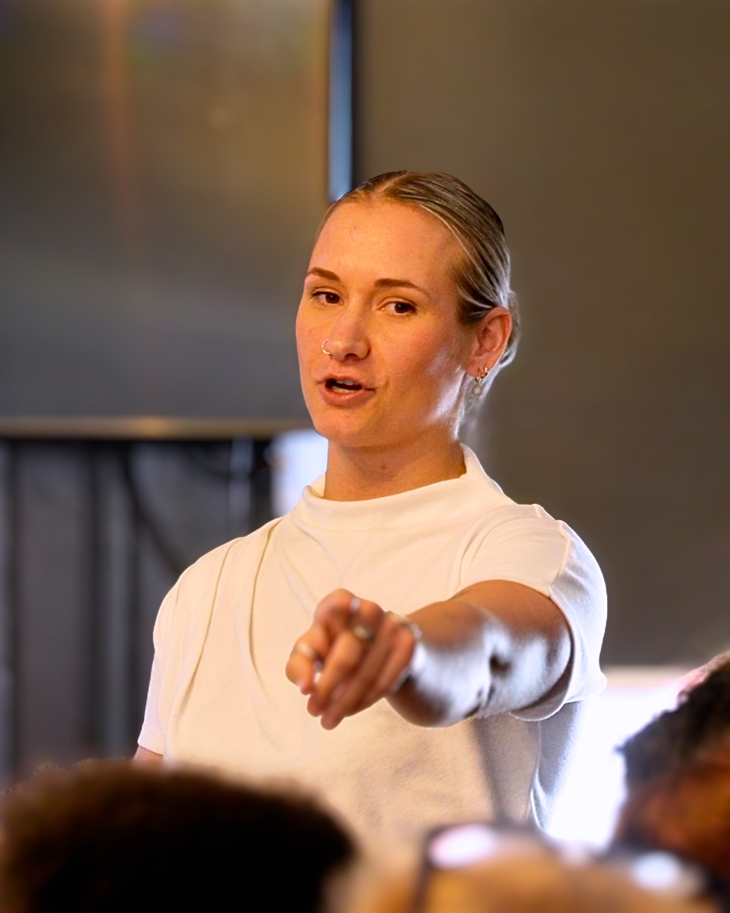

You've done the therapy, read the books, listened to every podcast. You understand yourself better than most people do, and you're still stuck. I help you think, feel and create the life you actually want.
This isn't about “being more motivated.”
Your current level of consciousness means you…
Phone, TV, scrolling, vaping, drinking, food, staying busy. Anything to avoid being alone with your thoughts or facing what you know needs to change.
You know exactly what you need to do, but somehow tomorrow keeps becoming next Monday, and next Monday becomes another month.
You get close to the thing you want, then pull yourself away from it. You procrastinate, quit, numb yourself or create chaos, wondering why you keep getting in your own way.
Your days are full, your mind is constantly switched on, but when someone asks what you're actually working towards, you're not entirely sure.
Wake up and choose where your time goes, instead of wondering where the day disappeared to.
Do what you say you'll do, when you say you'll do it, without needing motivation or another Monday to start again.
Actually feel proud and satisfied with who you are, while still wanting more from life.
Know what matters to you and why, instead of staying busy just to avoid sitting still with yourself.
Understanding yourself is the beginning. It was never the destination.
Every plan, every goal, every fresh start sits on top of the identity you already have.
Change the identity, and the rest starts moving on its own.
That's the work Becoming does.
You already understand yourself, and you've done the work to get there. ACT is what actually changes what happens next, moving what you now know out of your head and into how you actually think, feel and act, day to day, until it's not something you're doing anymore. It's just who you are.
The Becoming Method is taught through The ACT Framework. Three pillars that move you from thinking about change to actually living it.
How you show up. Getting your body and state steady enough to actually hold change. The ground floor of the work. Without it, nothing above it lasts.
Who you believe you are. The pillar that changes the whole picture, because everything above it is built on it.
How that identity gets lived. What you build and do because the first two are true. Momentum that doesn't need forcing.
Identity is a skill you train. Not a vibe you chase.
You're invited to have a call with Grace so she can get to know you, understand what you're struggling with, and hear where you want to go. You'll leave the call clearer than you came in, whether or not you move forward. The priority is making sure we're a good fit.
Private 1:1 coaching with Grace, built around The ACT Framework. You'll feel a shift from the very first session.
Real, visible change inside the first month. Identity-level work that actually holds long after the call ends.
Private 1 to 1 coaching with Grace. Call frequency built around you. Daily support to keep it moving.
Book a call to find out more about the method and see if we're the right fit.

I'm Grace. I spent years watching people around me who looked like they'd already figured it out, and still couldn't seem to become someone new myself, no matter how well I understood why.
I built The Becoming Method out of my own way through it. A framework that turns understanding into an actual, different life.
Over the last 8 years I've coached more than 300 people through this work, delivering over 10,000 sessions one to one.
If you're ready to build the life you can already see, you're in the right place.
Understanding isn't the same as change. You can know exactly why you do something and still keep doing it, because the pattern lives at the identity level, not the information level. Books, podcasts and courses give you language for your patterns, Becoming gives you a new identity underneath them. That's the baseline most of my clients already have, not the ceiling. The ACT Framework doesn't hand you more to understand, it rebuilds who you are underneath the pattern, so the behaviour changes because the person doing it has actually changed.
You'll feel a shift from the first session. Real, visible growth lands inside the first month. This is not a slow burn. It's identity-level work and your life reflects it quickly.
Most coaches give tactics. Tactics sit on top of an old identity and collapse under pressure. Becoming changes the identity first. The execution holds because the self executing it is different.
Readiness isn't a feeling. It's a decision. If you've been saying "I'll start when I'm ready" for more than a year, you're ready. Book the call. You'll know in the conversation.
Private 1:1 coaching with Grace, built around you. Call frequency isn't fixed, some people need one a week, some every other week, some once a month, depending on what's actually going on for them, so problems get resolved quickly instead of waiting for a slot. Between calls you're in daily contact with Grace to make sure things are actually being implemented, plus the resources and curriculum to support it. It's built around your life, not a fixed structure everyone gets slotted into.
We go deep on where you're stuck and why nothing you've tried has held. You'll leave the call with real clarity even if you never work with me, no pressure either way, and no sales script on my end.